Thermal Optimization of Fins
Enhancing heat dissipation with reduced material mass through geometric design refinement and simulation.
Overview
In modern thermal systems, fins are used to increase the heat dissipation area of a surface. However, material and space constraints often demand designs that achieve better performance with minimal mass. This project investigates and compares different fin geometries — primarily rectangular and slotted configurations — to find the optimal design balancing heat transfer and material usage.
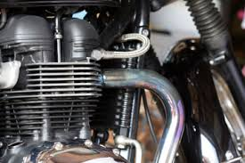
Objective
To evaluate and compare the performance of various fin geometries based on their temperature profiles, heat flux, and mass. The goal was to identify which fin designs offer superior thermal performance with lowest material consumption using numerical and computer-aided analysis.
Methodology
- Modeled five baseline geometries: circular, square, triangular, trapezoidal, and elliptical profiles. All profiles maintained equal perimeter for fair comparison.
- Identified the geometry with highest heat transfer rate (triangular profile) and developed optimized variations with slots and rectangular grooves.
- Modeled geometries using CATIA V5 and imported into ANSYS Workbench for meshing and steady-state thermal simulation.
- Conducted analysis under constant heat input and convective boundary conditions.
- Compared results based on heat transfer rate and material consumption for Aluminum 6082. Simulation parameters: cylinder bore temperature = 350°C, convection coefficient = 12 W/m²°C, ambient temperature = 30°C.
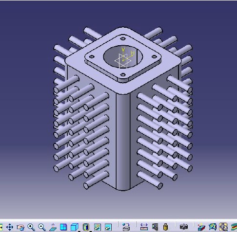
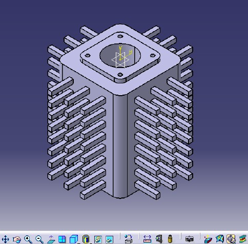
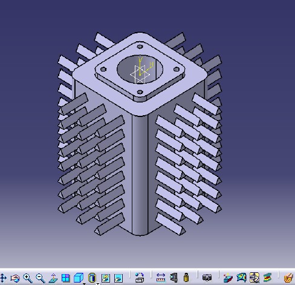
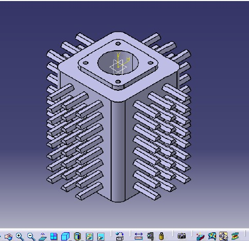
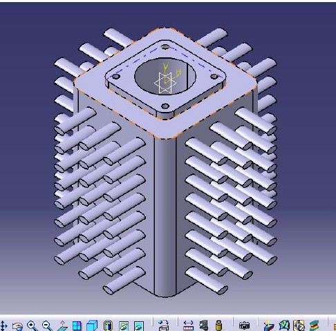
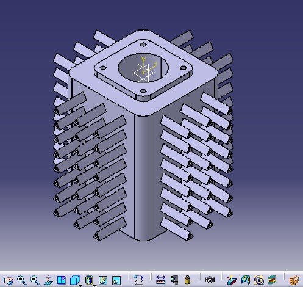
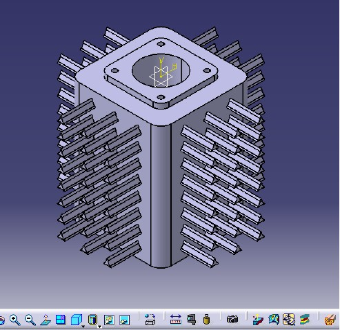
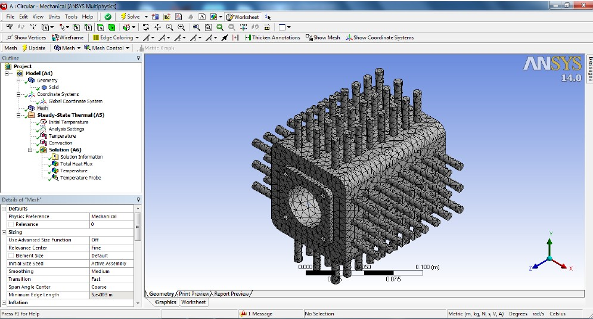
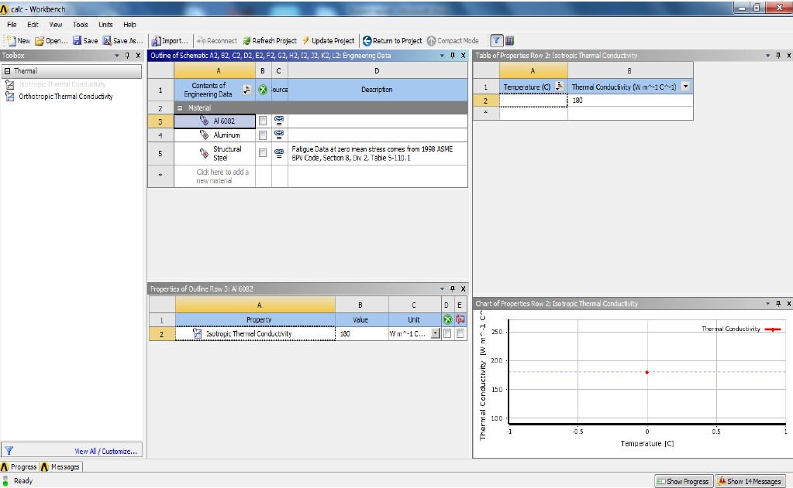
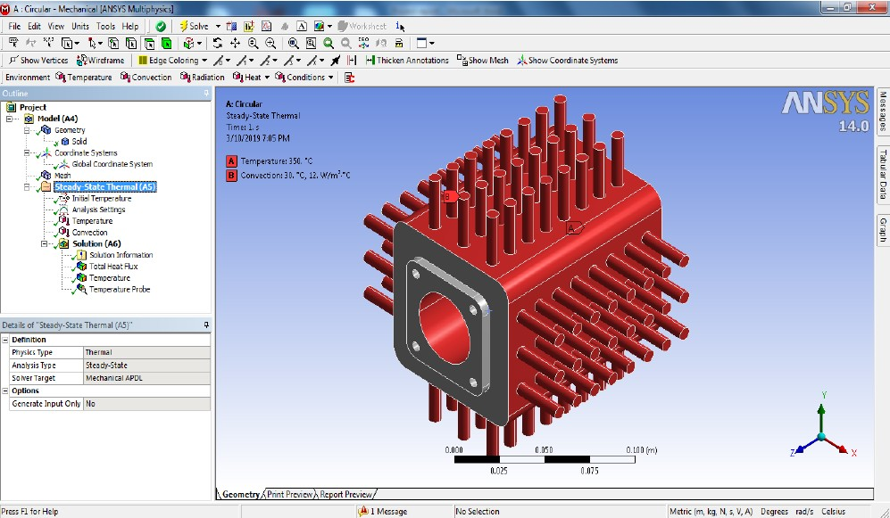
Key Results
- Baseline Comparison: Triangular profile exhibited the highest heat transfer rate (82,552 W/m²) while circular profile showed the lowest (71,441 W/m²).
- Slotted Design Performance: The slotted variation, based on the triangular profile, demonstrated a 93.3% increase in heat transfer (221,750 W/m²) due to significant increase in surface area for convection.
- Grooved Design Performance: The grooved profile achieved a 49.8% increase in heat transfer rate (200,050 W/m²).
- Material Efficiency: Comparing mass of fin for different profiles: slotted design (2.30 kg) was the lightest, followed by grooved (2.33 kg), triangular (2.41 kg), and circular (2.53 kg) — highest mass.
- Trade-offs: While slotted fins clearly outperformed all other designs, manufacturing complexity and associated costs would be substantially higher due to the intricate geometry.
- Future Direction: This study provides a foundation for exploring optimized fin structures and could be followed up with detailed manufacturing analysis using traditional (milling) and modern techniques (SLS 3D printing).
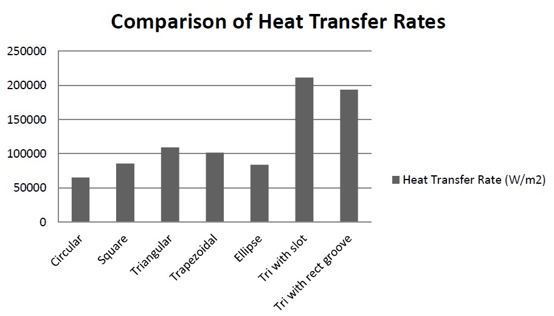
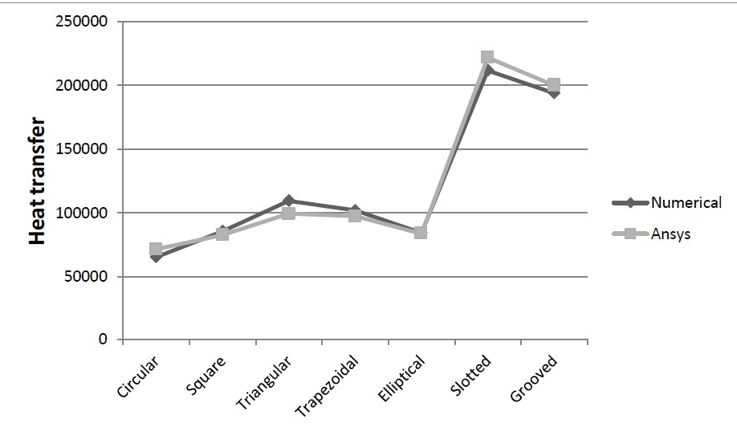
Key Learnings
- Geometric optimization can yield dramatic improvements in thermal performance (93%+ increase) but must balance manufacturing feasibility.
- Surface area is the dominant factor in convective heat transfer — increasing perimeter through smart geometry is more effective than material addition.
- FEA and numerical simulation are essential tools for thermal design optimization, allowing rapid iteration without physical prototyping.
- Engineering is about trade-offs: optimal theoretical design may not be optimal in practice when manufacturing and cost constraints are considered.
Publication & Presentation
This work was presented as a bachelor's thesis project and subsequently presented at a conference. The comprehensive analysis and results have been documented in a detailed technical report.